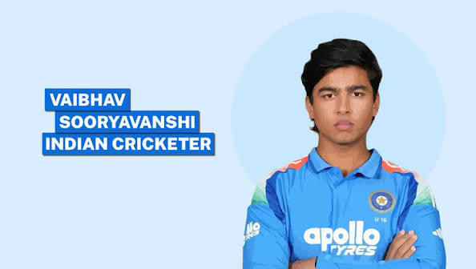

Vaibhav Sooryavanshi (born March 27, 2011) is an Indian cricketing prodigy from Samastipur, Bihar. The left-handed top-order batter made global headlines by becoming the youngest Indian international debutant at just 15 years and 99 days old, surpassing the long-standing record held by Sachin Tendulkar.